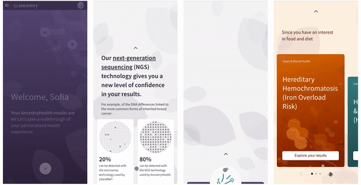

Role: Team Lead & Lead Product Designer | Device: Mobile app | Duration: 48hr Hackathon
I was the team lead for this project which won the companywide Empower 2020 Hackathon, and got voted for the Best Design Award. We started from a user problem synthesized from CSAT verbatims and generated the solution through a design-led approach. We created an intuitive and engaging onboarding experience for users receiving their AncestryHealth results. The project was later adapted into a prioritized MBI for production before Ancestry discountinued Health product in 2021.
Pic. 1 Video captures of the hackathon prototype
Users find the previous AncestryHealth experience too generic and difficult to derive insights. Reading a lengthy scientific report is neither personal nor exciting. Most customers didn't have any genetic risks from their tests, but they found it disappointing to get boring general genetic risk reports after paying for and going through a DNA Health test.
Pic. 2 Sample layout of the previous AncestryHealth experience
Consider users' age, gender, and interests to serve up specific genetic risk reports tailored to the users in a visually stimulating way and digestible bit sizes.
Leverage animations to deliver a delightful experience and celebrate with users who did not test positive for genetic risks. Instead of disappointment, create excitement.
Pic. 3 Screens of the hackathon prototype
The redesign of the Health onboarding includes two levels. The first level is the overview of the advanced technology we used to give assurance and confidence in our results, the four categories we have results for, a celebration of no risk detected, and three highlighted conditions to dive in. In the second level, we summarize three brief reports that interest the customer the most and divide them into bite-size information with supporting visual elements.
Bring AHA moments up front with engaging animations in a scrolling storytelling format. Comparing microarray technology used by other companies and NGS technology used by Ancestry, we could give customers confidence in the test results they are receiving.
Most of our customers didn't test positive for genetic risks of all the conditions. When interviewed, they expressed they were a little disappointed when they didn't find anything. Instead of the disappointment, we emphasize celebrating that genetic risks were not found in their DNA.
Based on users' age, gender, and interests, we can serve up specific genetic risk reports tailored to the users. Leveraging animations to make the experience more intriguing. (We missed the text being blocked due to limited QA time for the hackathon)
Users complained about the tedious and lengthy scientific reports. In the onboarding, we only surface executive summaries that interest users and pace the summary in digestible bitesize stories.
The genetic risks results onboarding was one of my favorite projects that I worked on. In this project I excercised leadership role and had the flexibility to incorporate animations into the design. I had never worked as closely with my engineer team as we did in this hackathon. We were really proud of what we built in such short time, and how polished it looked.